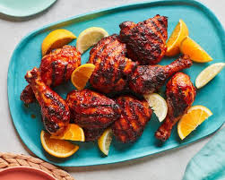

BBQ Chicken Recipe

Easy to Make BBQ Chicken
The best bbq chicken is made at home and can be grilled or oven baked. It is
not complicated to make or require special ingredients. Sweetened with bbq
sauce it makes for a sweet and juicy chicken.
Everyone loves bbq chicken, unless its overcooked. But don't worry this recipe
is so easy anyone can master it. The recipe is simple and quick and no extra
time is needed to prepare the ingredients.
Ingredients
- 4 boneless skinless chicken breasts
- extra virgin olive oil
- kosher salt, to taste
- freshly ground black pepper, to taste
- 1/2 cup of your favorite BBQ sauce
Steps
- Prepare the grill for direct cooking at high heat (450°F). Brush the
cooking grates clean.
- Drizzle the chicken breasts with extra virgin olive oil and rub over
the breasts. Season generously with kosher salt and freshly ground black
pepper.
- Place the chicken breasts on the hot grill. Cover and cook for 5-6 minutes
or until they easily release from the grates. Flip the chicken and cook for
4-5 minutes longer. Baste the chicken breasts with BBQ sauce, flip and cook
for 2 minutes on each side. Repeat on the other side. Cook until the
breasts are firm to the touch and opaque all the way through, registering
160°F internal temp (the temp will rise to 165°F as the chicken
rests).
- Transfer to a plate and cover with a piece of aluminum foil and let rest
for 5 minutes. Serve with more BBQ sauce if desired.